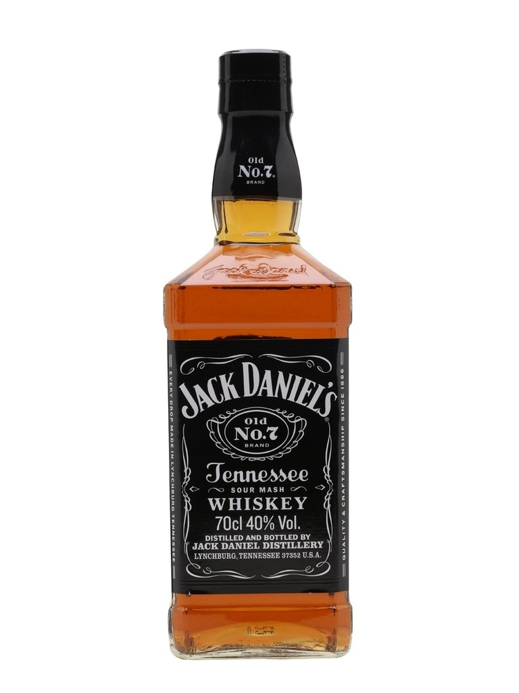
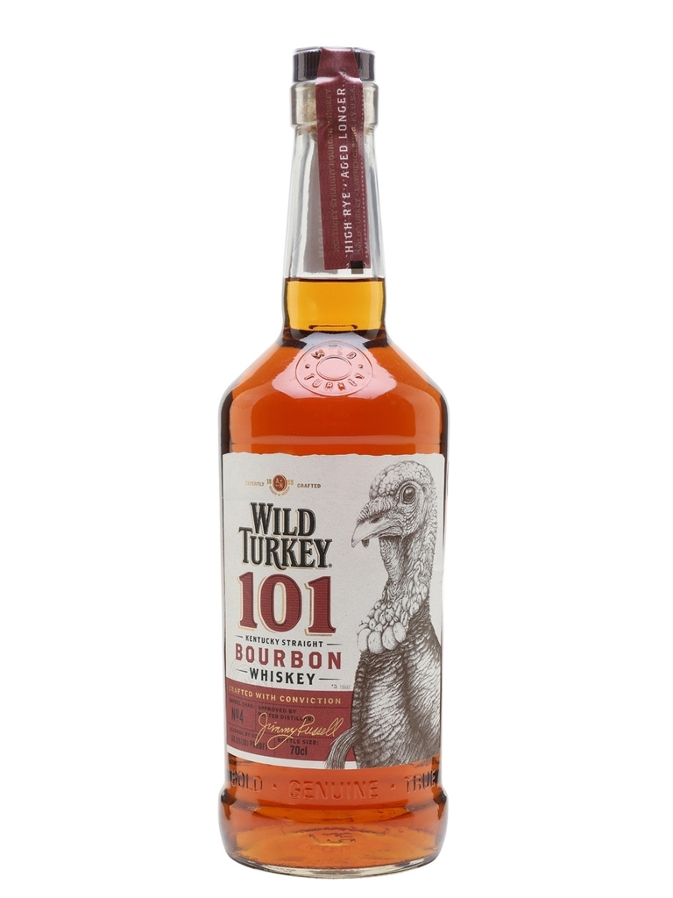
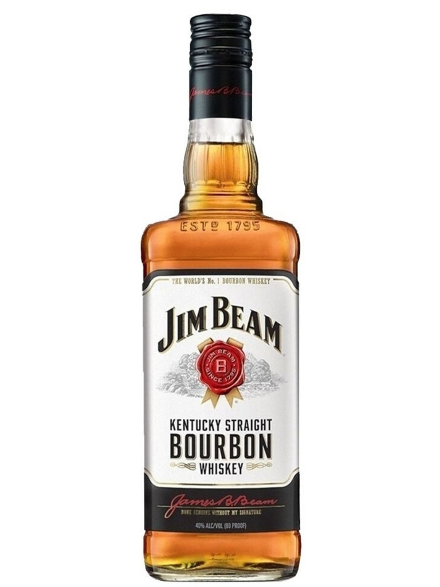
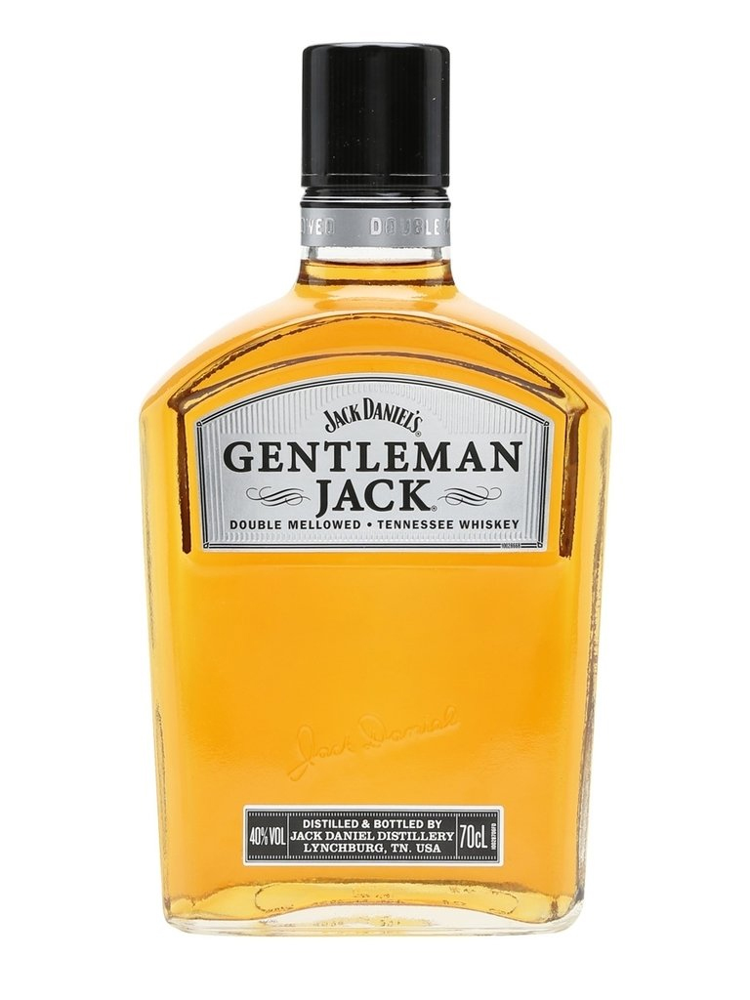
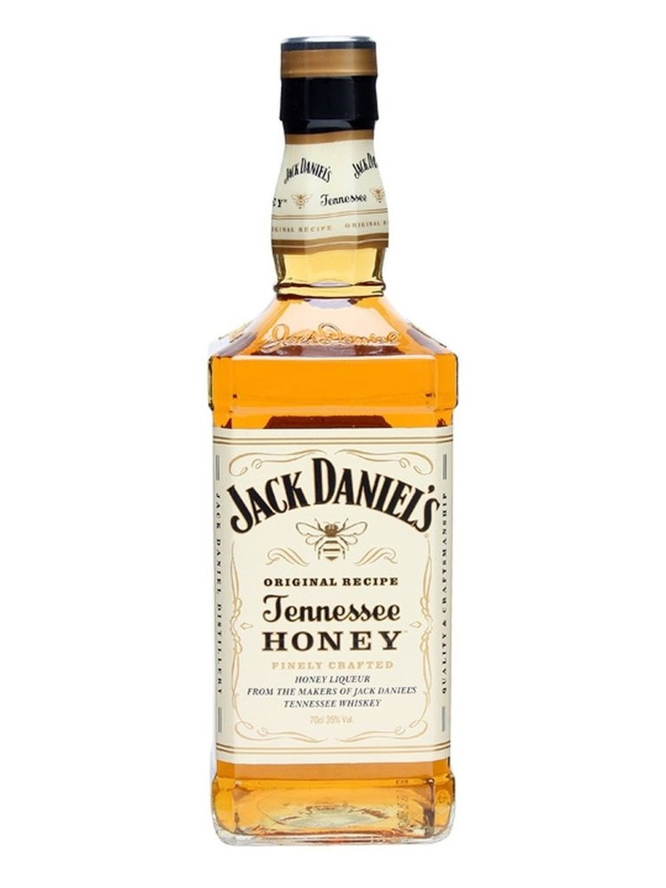
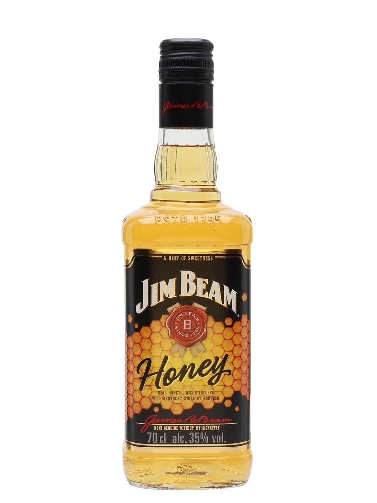

Jack Daniel's Old Nº7
Notas de Cata:
- Nariz: jarabe de azúcar morena, pasas agrias, cera, resina, hojas verdes.
- Paladar: dulce, con cuerpo ligero. Hebras de chocolate, toques de naranja, madera perfumada, canela.
- Final: chocolate con naranja, madera y un poco de carbón.

Wild Turkey 101
Notas de Cata:
- Nariz: picante para comenzar, seguido de centeno y semillas de comino. La dulzura del caramelo se siente de fondo.
- Paladar: Intenso y en capas, con olas de canela, clavo, nuez moscada, avellanas y menta.
- Final: Largo y especiado.

Jim Bean
Notas de Cata:
- Nariz: dulce, con notas suaves de vainilla, caramelo y heno cortado, un toque de maíz fresco y un poco de dulzura de cereales.
- Paladar: cuerpo armonioso y persistente, con notas de roble tostado, vainilla y crema inglesa.
- Final: roble tostado y resina con un poco de dulzor, persistente y limpio.

Jack Daniel's Gentleman Jack
Notas de Cata:
- Nariz: roble más suave y más seco en la nariz que Old No.7. Vainilla, azúcar moreno, arce y manzana.
- Paladar: dulce vainilla, frutas y manzana.
- Final: sutil roble que se desarrolla en un acabado suave de fruta con arce y miel floral.

Jack Daniel's Honey
Notas de Cata:
- Nariz: un frasco recién abierto de miel cristalizada, con un toque de tierra, toques florales y algo de pimienta.
- Paladar: textura espesa y aceitosa, con caramelo, nuez moscada, pimienta y un matiz de miel debajo de todo.
- Final: picante y dulce, canela, miel líquida y dulce de vainilla.

Jim Bean Honey
Notas de Cata:
- Nariz: dulce, con notas de vainilla, caramelo y miel.
- Paladar: vainilla, caramelo y roble.
- Final: excelente acabado en miel.